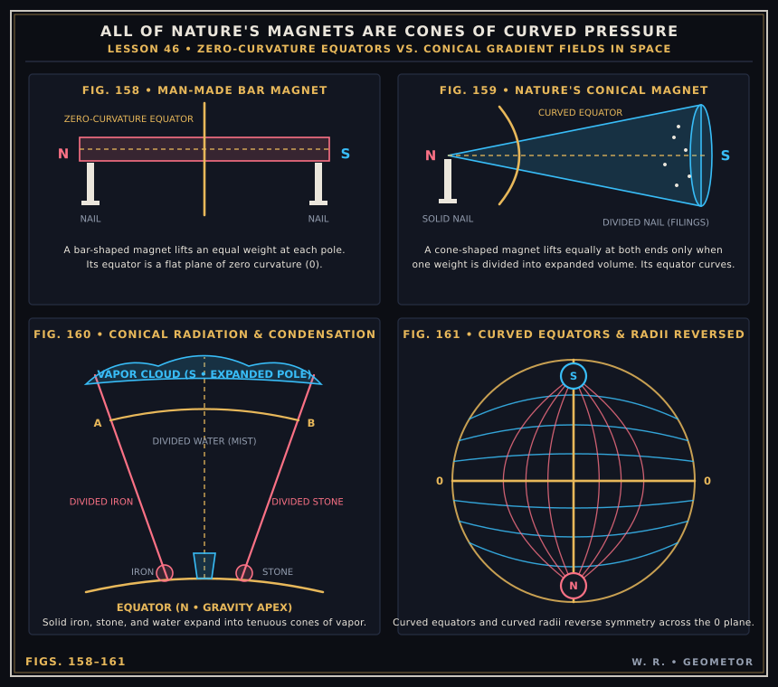

Chapter II: The Double-Cone Vortex — Centripetal Generation & Centrifugal Radiation¶
The Two-Way Spiral Engine of Life, Growth, and Magnetism (Lessons 18, 29 & 46)
In Russell’s wave mechanics, there are no straight lines in the moving electric universe, nor do cylindrical bar magnets exist in Nature. Every wave-field is wound and unwound by two opposing interpenetrating cones operating between the flat planes of zero curvature and the central gravitational nucleus.
The Electric Cycle of Vitality (Figs. 38–47)¶
Vitality in any system—whether an oak tree, a human body, or a stellar sun—is measured by the ability of its opposite poles to pull apart from its zero equator toward wave amplitude (+4 / 0 / -4):
Seed in Rest (`Fig. 38`): Polarity lies dormant at zero equilibrium (0).
Unfolding Youth (`Figs. 39–41`): Centripetal and centrifugal cones extend from the equator, drawing earthward roots (+) and skyward branches (-).
Full Maturity at Wave Amplitude (`Figs. 43–44`): The interpenetrating double-cone vortex reaches maximum axial extension and equatorial balance.
Declining Polarity & Return to Rest (`Figs. 45–47`): As the poles lose their ability to pull apart, the conical vortex flattens back into the plane of zero curvature.

Plate II (Figs. 38–47): The ten-stage electric cycle of polarization (growth/life) and depolarization (decay/rest) governed by opposing spiral cones.¶
Why All of Nature’s Magnets Are Cones (Figs. 158–161)¶
A man-made cylindrical bar magnet (Fig. 158) artificially forces equal density at both poles, producing a flat equator of zero curvature. In free space, however, every pressure gradient expands conically from a dense gravitational apex (N) to a tenuous radiative base (S):


Plate III (Figs. 158–161): Comparison of the cylindrical bar magnet (Fig. 158) with Nature’s conical magnets (Fig. 159), conical evaporation of solid matter (Fig. 160), and the spherical reversal of curved equators and radii (Fig. 161).¶